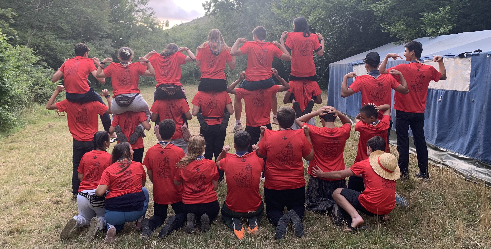
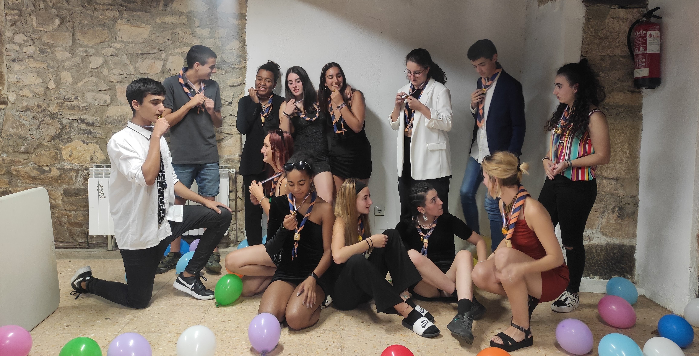
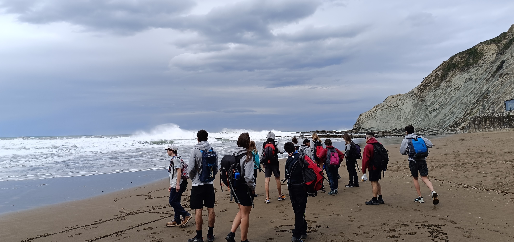
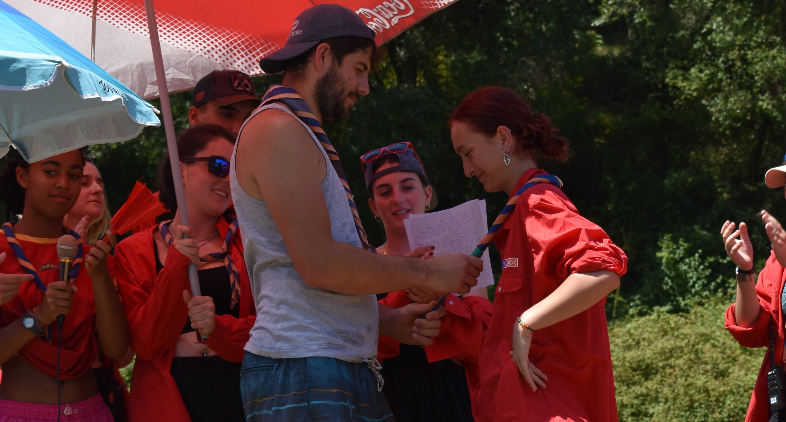

Una etapa de compromiso, servicio y construcción del propio camino para jóvenes de 15 a 17 años.

La rama de Pioneros (Azkarrak en euskera) es el momento en el que los jóvenes se organizan como comunidad. Es un espacio de confianza donde crecen juntos, comparten inquietudes y construyen su identidad como grupo.

Dentro de la Comunidad, los pioneros se organizan en pequeños equipos donde toman decisiones, desarrollan proyectos propios y se reparten responsabilidades según las opciones de Fe, País y Persona.

La Empresa es el gran proyecto creado por los propios pioneros cada año. En ella detectan una necesidad, planifican y actúan frente a ella, convirtiéndose en protagonistas reales de su aprendizaje y de su impacto en el entorno.

El servicio es el eje de la etapa. A través de sus proyectos, los pioneros se implican en su entorno, colaborando con asociaciones, apoyando causas sociales o mejorando su comunidad. Descubren que pueden transformar la realidad que les rodea.

Durante esta etapa, los Pioneros realizan volantes y raids, caminatas por la naturaleza donde aprovechan el tiempo para hacer grupo, apreciar el entorno y encontrar momentos de reflexión.

En esta etapa cada pionero comienza a definir su propio camino. A través de sus experiencias, reflexiona sobre quién es, qué quiere y qué puede aportar, construyendo poco a poco su proyecto de vida.

La Promesa Scout es un compromiso voluntario en el que la persona decide libremente vivir de acuerdo con los valores Scout. La etapa de Pioneros está enfocada en dotarles de las herramientas para que puedan afrontar este compromiso.